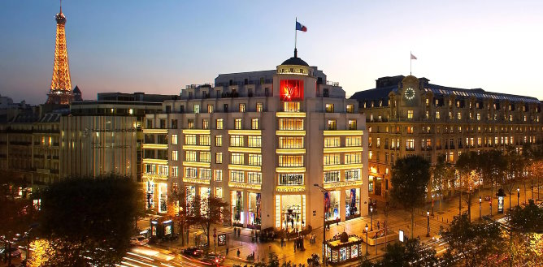
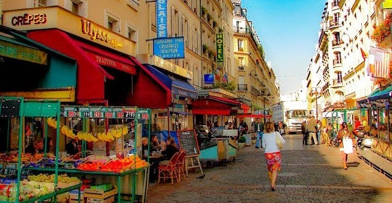
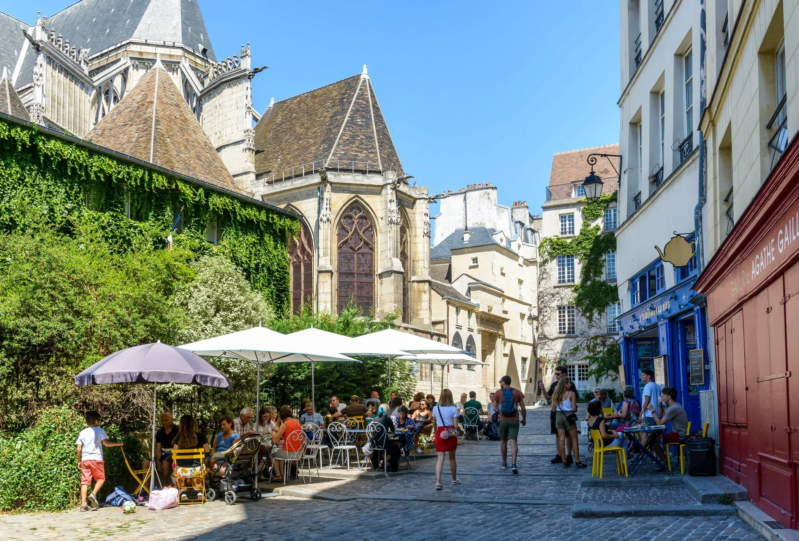

Shopping in Paris is an experience all its own, whether you’re hunting for designer labels or discovering hidden local gems. The city is home to world-famous fashion houses, elegant department stores like Galeries Lafayette, and charming independent boutiques tucked into the side streets of Le Marais and Saint-Germain. Beyond fashion, Paris’s markets offer a vibrant look into everyday Parisian life—wander through open-air stalls filled with fresh produce, flowers, vintage treasures, handmade crafts, and antiques. From luxury shopping to lively flea markets, Paris makes browsing feel like part of the adventure.
The Champs-Élysées is Paris’s most famous shopping avenue, stretching from the Arc de Triomphe to Place de la Concorde. Here you’ll find a mix of luxury boutiques, flagship stores, and global brands, all set along a wide, tree-lined street that feels unmistakably Parisian. It’s perfect for a leisurely stroll and a bit of sightseeing while you shop!
This area is best if you're looking for:

Rue Cler is a quaint yet lively pedestrian street filled with specialty shops, fresh produce stands, bakeries, fishmongers, and cheese boutiques. It’s a great place to wander if you want to experience a true Parisian market atmosphere without the crowds of the larger markets. This area is a lot more traditional and really expresses French culture.
This area is best if you're looking for:

The Marais is one of the best neighborhoods in Paris for independent boutiques, concept stores, and trendy fashion labels. Its narrow medieval streets are lined with vintage shops, artisan jewelry makers, and stylish clothing stores—perfect for discovering one-of-a-kind pieces you won’t find anywhere else. This area is best if you're looking for:
